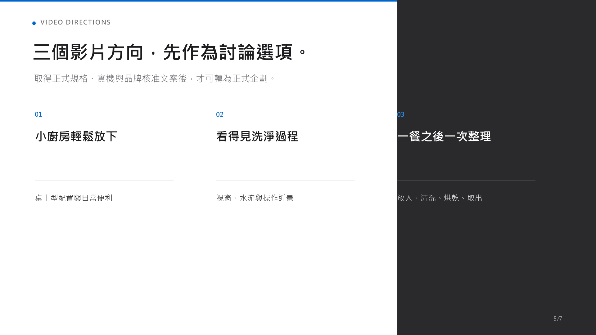
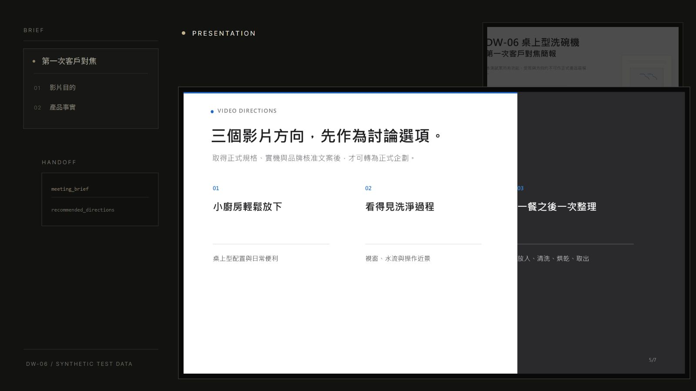

返回作品列表
委製需求與 AI
DW-06 / PRESENTATION OUTPUT / SYNTHETIC TEST DATA
工具與工作流程
委製需求與 AI
簡報自動化委製需求與 AI
簡報自動化
把需求整理成一份可以直接拿來對焦的簡報。

BRIEF / HANDOFF
先把需求變成可以確認的內容。
Brief 收斂成方向與待確認事項，再交給後續的簡報製作。

PRESENTATION OUTPUT